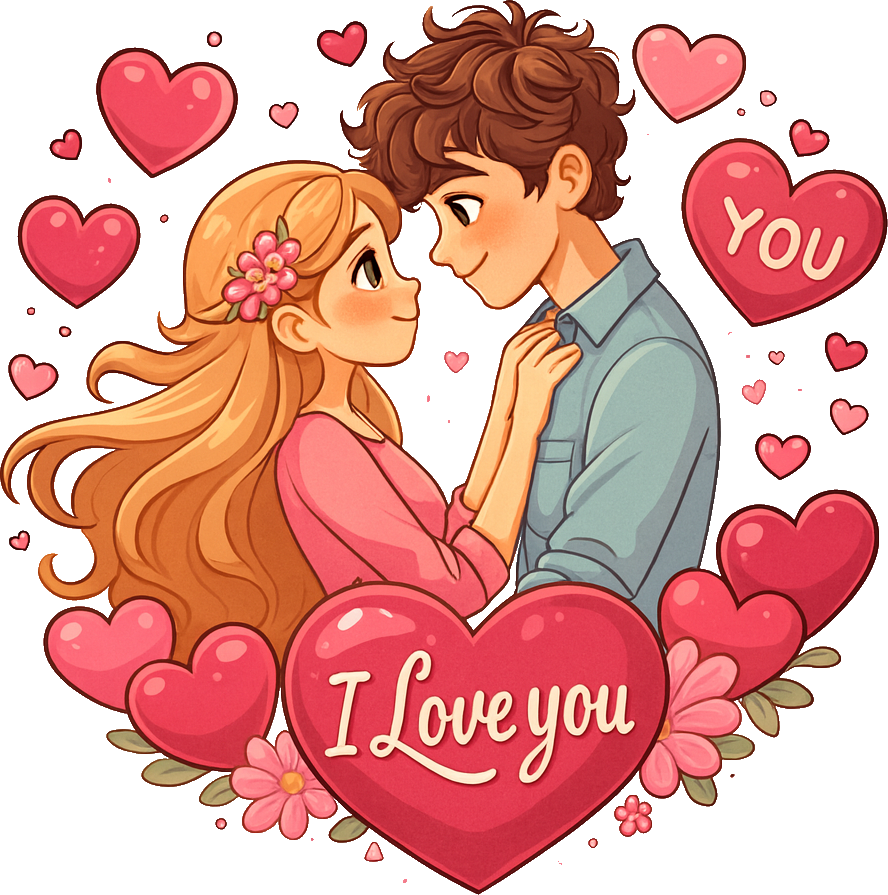

Jeżeli dotarłaś Tutaj to dobrze - oznacza to że Finalnie udało Ci sie przedostać do całego Kontentu ukrytego w mojej stronce - Na obecna chwile Nie możesz przedsotać sie dalej - ponieważ aby rozwiązać do końca zagadke musisz poczekac na odpowiednia date która Ci to umożliwi
Jeżeli to czytasz - Nic mi nie mów. zochowaj swój pobyt tutaj sama i poczekaj na dalszą część - Strona jest podpieta pod kod datowy który da Ci dalsze informacje co dalej, strzepek Zagadki jaki moge ci obecnie dać to - Wspólny wyjazd w Bardzo urocze przejrzyste oraz kolorowe miejsce, zarezerwowany już w niedalekiej przyszłości, wyjazd owiany wieloma interesującymi atrakcjami oraz szczodrymi pieszczącymi prezentami
Czasem Ci najbliżsi po mimo tego że często milczą gdy tego nie chcemy - wiedzą najwiecej, Chce bys wiedziala tylko tyle - że tej dziewczynie którą przyjmowałem do rąk - prezentuje coś co zapamieta do końca naszych dni, Chce sprawić by była najszcześliwsza kobietą na ziemi.
